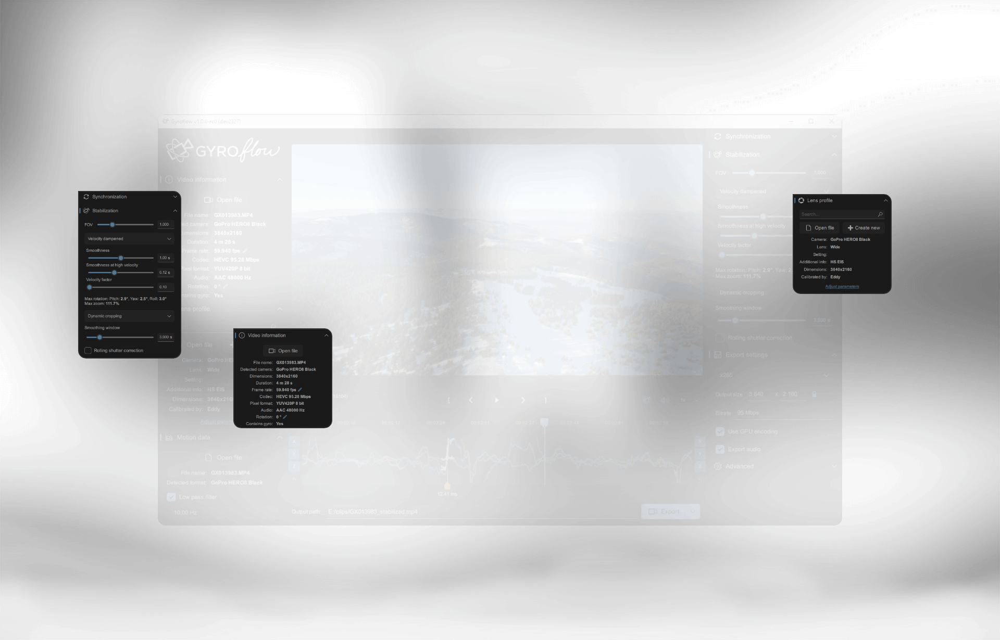

从一个 GoPro 用户的视角：Gyroflow 陪我走过的这一年
装它的时候以为就是个防抖工具，用了大半年才发现远不止于此。标定、同步、插件工作流、拍摄端准备——每一层都藏着只有长期用才会踩出来的细节。
当初为什么装
去年夏天开始认真玩运动相机，GoPro 9 拍出来的画面总是让我觉得"还差那么点意思"。机内 Hypersmooth 裁边太狠，裁切后视角窄得像画幅缩水；用 Premier Pro 自带的 warp stabilizer 又经常在快速运镜时出果冻。朋友推了gyroflow官网，说它读相机原生的陀螺传感器数据，不是光流瞎猜，稳定精度不是一个量级的。我下了个试试，一用就是到现在。
哪点越用越顺手
最开始让我觉得"这东西有东西"的，是它的标定流程。第一次打开标定工具，看着棋盘格图案在画面里移动、软件自动算出镜头畸变参数——那种精确感是光流防抖给不了的。但真正让标定从"每次都头疼"变成"几分钟搞定"的，是后来才发现的输入拉伸设置。我给 GoPro 装了 1.33x 的变形宽银幕镜头，最开始标定结果总是差，直线怎么都校不直，重投影误差永远降不到合格线。折腾了好几天，后来去gyroflow文档翻了一下才搞明白：变形镜头的画面在机内被压缩过，标定前必须用 input stretch 先横向还原回来。填上 1.3，重新标定，误差立刻下来了——那条直线终于成了真正的直线。

现在标定对我来说就是个机械流程：导入素材 → 填镜头参数 → 跑自动标定 → 看误差。误差没问题就存成档案，下次同型号同镜头直接加载。误差不对就检查输入拉伸有没有漏填、镜头类型选得对不对——这套排查逻辑是用了不知道多少次之后才形成的肌肉记忆，第一次碰的人大概率会卡在这里。
第二个让我越来越顺的，是 GPU 加速导出。从官方下载拿的时候也没细看显卡支持范围，老笔记本上 H.265 编码总是报错，要么说像素格式不支持，要么直接闪退。显卡驱动更了三遍都没用，后来才知道那台机器是 2014 年的卡，根本没有 H.265 硬件编码。换成 H.264 就好了，或者直接关 GPU 用 CPU 渲染——虽然慢，但画质反而更好，不赶时间的项目我现在主动选 CPU。新机器就爽多了，NVIDIA GTX 1660 走起 H.265 ProRes 都没问题，导出速度比 CPU 快七八倍。
哪点越用越烦
越用越烦的不是软件本身，是拍摄端的遗留问题。我以前拍视频习惯跟着教程用 180° 快门法则——30fps 就用 1/60s，画面带自然运动模糊。这套在云台拍摄时完美，但用了 Gyroflow 稳定之后就出问题了：帧的整体运动被软件改写了，但模糊烙在原始像素上、方向还是拍的那一刻的方向。稳定后画面往左飞，模糊却往右拖，大脑立刻察觉违和。原片里你根本没注意这模糊——它跟着原运动走看起来很正常——稳定后才暴露。
这个问题烦了我好一阵，拍了两三次外景素材才真正想通：后期稳定的画面，拍摄端必须用高快门速度，尽量不要 ND 滤镜。90° 甚至 45° 快门比 180° 适合后期稳定，快门越快模糊越少，可裁切的干净像素越多。光线实在不够上 ND 也可以，但那是为了压光圈避免过曝，不是追 180° 法则。想要自然模糊观感？正确顺序是先稳定、后加模糊——剪辑软件里的像素运动模糊工具（Resolve 内置的、AE 的 Pixel Motion Blur）基于稳定后的画面运动生成模糊，方向永远正确。
说个反直觉的：机内 Hypersmooth 的素材，这个模糊问题一样存在。很多人以为机内防抖了就万事大吉，其实机内防抖已经裁切了一次画面，模糊问题照旧。我现在拍 GoPro，Hypersmooth 直接关掉，把裁切空间留给 Gyroflow——反正后者精度高得多，裁切更集中在画面边缘而非随机变形。
哪个功能成了每天离不开的
剪辑软件插件工作流。以前我是 Gyroflow 独立渲染出片，再导入 Resolve 剪辑——中间多一次有损转码，BRAW 这类 RAW 素材的 ISO、白平衡控制全丢了。插件把 Gyroflow 引擎装进 Resolve 之后，时间线上挂特效，原始文件直接被稳定处理，零转码零二次压缩。GoPro 8+、DJI、Insta360、Sony 这些自带运动数据的相机，直接在插件里选素材文件就行，数据自动加载，挂上即稳。需要同步的素材我在主程序里完成全部工作后导出项目文件，插件里载入就行，引擎按参数直接处理原始像素。
插件支持 OpenFX、Adobe、Apple 三大阵营，Resolve、Premiere、After Effects、Final Cut Pro X 都能用。我现在拍 GoPro 和 DJI，直接 Resolve 里挂 Gyroflow 插件，从拍摄到出片中间没有任何转码环节，RAW 控制全程保留。这套流程现在已经替代了我以前"稳定出片 → 导入剪辑"的工作流，成了日常标配。

哪个碰都没再碰
运动数据手动同步的光流对齐工具。我手头的素材要么是 GoPro、DJI、Insta360 这些自带陀螺数据的相机，要么是需要外接数据源但可以在主程序里用简化流程搞定的。光流同步是给那些没有运动数据的素材准备的——比如老款相机、外接传感器数据漂移、或者素材本身运动数据损坏。我到现在还没碰到过这种情况，光流同步那一页的按钮一次都没点过。也许哪天接了老相机或者传感器出问题了会用上吧，目前就是个摆设。
观感修正：当初高估了什么、低估了什么
刚装的时候以为 Gyroflow 就是个比 Warp Stabilizer 精度高一点的防抖工具，换个软件的事。用了大半年才发现我低估了它：它其实是一套完整的后期稳定工作流，从镜头标定、运动数据同步、稳定参数调整，到导出渲染、剪辑插件、渲染队列并行——每个环节都有独立的配置和判断逻辑，不是"拖进去点一下稳定"那么简单。
当初高估的是什么呢？高估了自己对"简单防抖"的需求。最开始想的就是"把抖的视频弄稳就行"，但一旦开始认真拍运动相机素材，就会发现裁切率、畸变修正精度、导出速度、素材格式支持这些指标直接决定了素材能不能用—— Gyroflow 在这些维度上的表现直接影响了我的拍摄方式和剪辑工作流，远不止"稳"这一个字。
去留结论：会不会卸载
不会。哪怕哪天换了相机，或者工作流里用上了别的稳定方案，Gyroflow 这套标定+插件+导出的工具链还是有留着的价值。它的参数体系和工作流逻辑已经成了我判断其他稳定方案的基准线——某个工具能不能在相同素材上达到类似的裁切率？导出速度能不能跟上？有没有对应的剪辑插件？这些判断的参照系就是 Gyroflow。
什么信号出现会考虑换？大概是出现另一个能读多源运动数据、标定精度不逊、剪辑插件覆盖同样广泛、而且有更现代的素材格式支持（比如下一代运动相机的 RAW 格式）的工具吧。但目前为止，还没看到接近的。
顺手提一句，这套工具的源码和配套资料在三个仓库都能拿到——想自己编译或查源码的话直接去GitHub，国内网络慢就换Gitee或者GitCode的镜像。